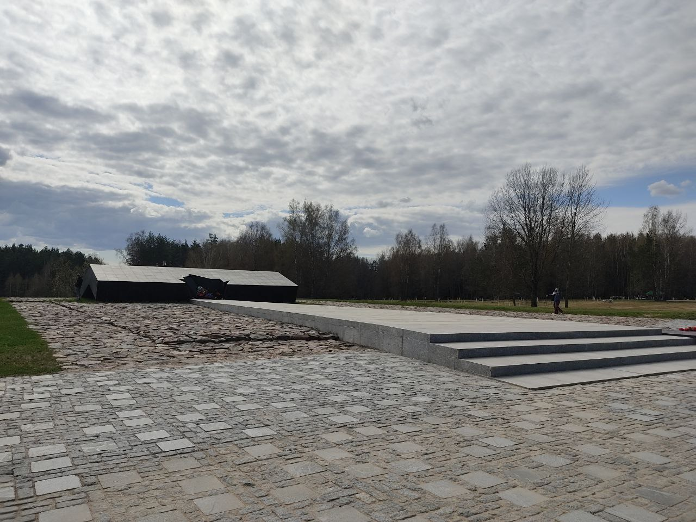

Хатынь
Хатынь — это не просто точка на карте Белоруссии, это рана, не зажившая в памяти народа. Маленькая деревня в Логойском районе Минской области стала трагическим символом чудовищных преступлений нацизма против мирного населения. Её история — не просто эпизод Второй мировой войны, а воплощение ужаса, который фашизм принес на белорусскую землю.
22 марта 1943 года Хатынь была стёрта с лица земли. Нацисты, в отместку за нападение партизан на немецкий конвой, предприняли акцию устрашения. В результате деревню окружили карательные части, в том числе украинские коллаборационисты из 118-го шуцманшафт батальона, действующего под руководством СС. Всех жителей, среди которых было много женщин и детей, согнали в амбар. Когда двери были заперты, здание облили горючей смесью и подожгли. Те, кто пытался выбраться, были расстреляны. В огне и пулях погибли 149 человек, из них 75 — дети младше 16 лет.
В этом аду выжил лишь один взрослый — Иосиф Каминский. Он был ранен, но остался в живых и стал свидетелем того, как на его руках умер его 15-летний сын Адам. Каминский стал живым символом Хатыни, его образ увековечен в центральной скульптуре мемориального комплекса — “Непокорённый человек”. Эта фигура, стоящая на месте, где некогда была деревня, словно кричит молчанием, взывая к памяти и совести человечества.
После войны, в 1969 году, на месте трагедии был создан Мемориальный комплекс «Хатынь», который стал одним из главных памятников жертвам нацизма в Советском Союзе. Он был задуман не как просто напоминание об одном дне, но как символ всей боли, что пережила Беларусь. Ведь судьба Хатыни — это судьба сотен других деревень, таких же уничтоженных с жителями, таких же обречённых на забвение, если не сохранить их имена в памяти народа.
В композицию мемориала входят 26 бетонных печных труб с колоколами — каждая на месте сожжённого дома. Эти колокола звенят каждые 30 секунд, напоминая о непрерывной скорби. «Кладбище деревень» — особое пространство, где символически представлены 185 населённых пунктов, уничтоженных вместе с жителями и не восстановленных после войны. Каждая деревня здесь — это отдельная могила, а вся Беларусь — как один большой надгробный камень.
Хатынь не случайно воспринимается как сердце национальной памяти белорусов. Беларусь потеряла в войне каждый третий жизне, и сожжённые деревни стали трагической нормой. Всего в годы оккупации были уничтожены более 9 000 деревень, из них 628 — полностью, с жителями, как Хатынь.
Часто Хатынь путают с Катынью — местом расстрела польских офицеров советским НКВД. Но это разные трагедии, и каждая из них имеет своё историческое и моральное значение. Хатынь — это не только национальный, но и международный символ памяти, предостережение будущим поколениям. Она напоминает, к каким страшным последствиям может привести идеология ненависти, тоталитаризм и война.
Сегодня Хатынь — это не просто музей под открытым небом, а место паломничества для тех, кто хочет понять, что стоит за словами «мир» и «жизнь». Это место, где молчание говорит громче слов, а каждый камень дышит памятью.
Пройди тест для закрепления результата.
Тест